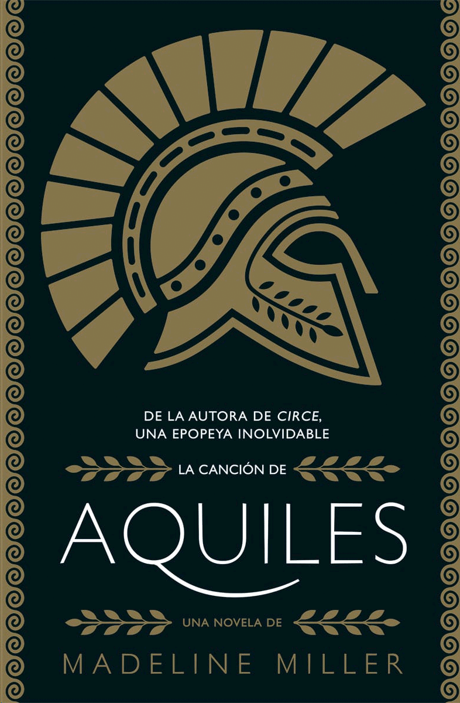
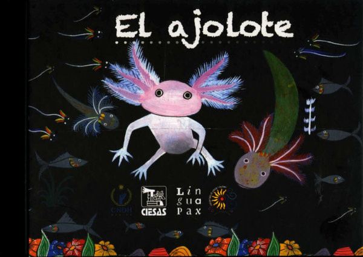
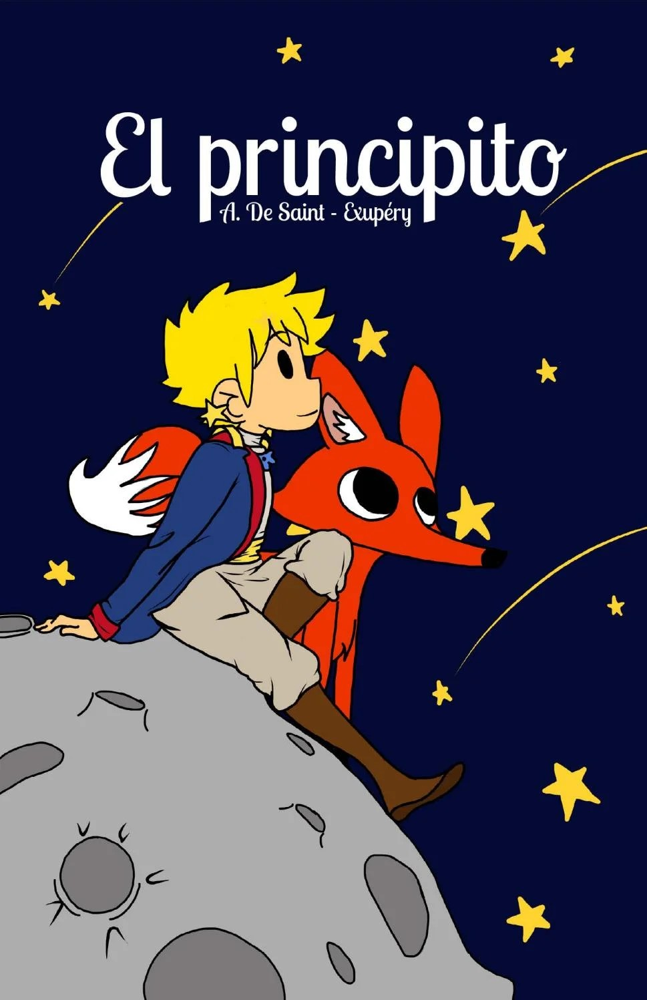

Libros Disponibles
La canción de aquiles
Autor: Medalline Miller
Género: Romance, Mitologia, Ficción histórica
Descripción: La Canción de Aquiles es una novela histórica y de fantasía escrita por Madeline Miller y publicada en 2011. La historia se basa en la mitología griega y narra el amor entre el príncipe Aquiles y su compañero de guerra, Patroclo

Coraline
Autor: Neil Gaiman
Género: Ficción, Terror
Descripción: Coraline es una novela de fantasía escrita por Neil Gaiman, publicada en 2002. La historia sigue a Coraline, una niña que, tras mudarse a una nueva casa, descubre una puerta que la lleva a un mundo alternativo donde todo parece perfecto, pero pronto se da cuenta de que es un lugar oscuro y peligroso. La novela explora temas de valentía, identidad y la lucha entre la realidad y la fantasía, y ha sido galardonada con varios premios, incluyendo el Premio Hugo y el Premio Nebulosa.
.jpeg)
EL Ajolote
Autor: Andrés Cota
Género: Bilogia
Descripción: Remitiéndose al estilo de un cuaderno de un naturalista, este libro se adentra en el mundo biológico del ajolote, un animal que ha despertado el interés constante de gente muy diversa: se ha concebido mitológicamente, comido por placer y usado como remedio; habita en la obsuridad del agua, quizás con discreción, pero es quintaesencial para la cultura del valle de México..

La Leyenda de Quetzatcóatl
Autor: Enrique Florescano
Género: Género del Libro 4
Descripción: La leyenda de Quetzalcóatl narra la historia del dios creador y su lucha contra las fuerzas destructivas del caos. Aunque Quetzalcóatl ayudó a los humanos a florecer, fue víctima de un engaño por parte de otros dioses. Al final, partió hacia el horizonte, prometiendo regresar algún día..
.jpeg)
La Rata con thinner y otras acéndodas de la sociedad
Autor: Omar Ramírez
Género: realismo mágico urbano
Descripción: Breve descripción del Libro 5.

El Principito
Autor: Antoine de Saint-Exupéry
Género: Ficción, Filosofia
Descripción: "El Principito" es una novela corta de Antoine de Saint-Exupéry que narra la historia de un pequeño príncipe que viaja por el universo, reflexionando sobre la vida, el amor y la amistad.
